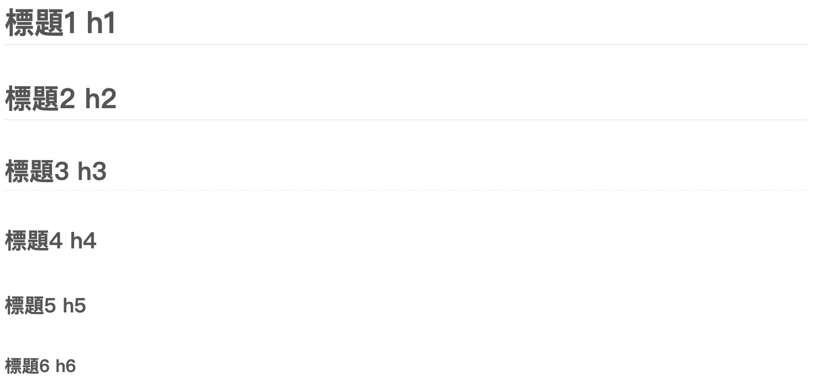

Markdown 是一種輕量級標記式語言，目標是實現「易讀易寫」，在中文版 Ｍarkdown 中提到，可以將之視為一種編寫的格式，而 HTML 是一種發佈的格式，創始人 John Gruber 對 Markdown 也是這麼介紹：
Markdown is a text-to-HTML conversion tool for web writers.
Markdown 應用
由於 Markdown 易讀易寫的特性，許多服務也支援了 Markdown 語法，例如：
- GitHub 、 GitLab 等，甚至延伸出變形版 Markdown ，例如 GFM (Github-flavored Markdown ， Github 偏好的 Markdown）。
- 即時通訊軟體 Slack 、 部落格編寫 Hexo 、 即時文件工具 HackMD 、專案管理工具 Trello 等等。
但要特別注意，上述的服務並非支援一致的 Markdown 語法，有可能只支援部分語法或是有自己延伸的語法，端看各個服務實作出的 Markdown 環境而定。
簡單介紹完 Markdown ，直接來看怎麼使用吧！下面整理個人覺得會常用的語法及 GFM ，作為金魚腦回憶用法的參考 XD
Markdown 也分成2大類，分成區塊元素 Block Element 及 行內元素 Span Element (如同 HTML 般)
區塊元素 Block Element
- 段落 paragraph
- 標題 Header
- 區塊引言 Blockquote
- 列表 List
- 任務列表 Task List (GFM)
- 程式碼區塊 Code Block
- 表格 Table (GFM)
- 水平線 Horizontal Rule
行內元素 Span Element
段落 Paragraph
HI~
我是第一個 p 段落區塊
(段落跟段落之間留空行)
我是第二個 p 段落區塊
HI~
我是第一個 p 段落區塊
我是第二個 p 段落區塊
標題 Header
文字與 # 記得留空格
# 標題1 h1
## 標題2 h2
### 標題3 h3
#### 標題4 h4
##### 標題5 h5
###### 標題6 h6

標題1下方加上多個「=」、標題2下方加上多個「-」也會有相同效果，如同在標題下方劃線的表示方式，例如：
標題1
===
標題2
---
PS. === 及 — 下方保留空行
區塊引言 Blockquote
列表 List
<ul> unordered/bulleted list 可以使用星號、加號、減號 (*/+/-) 來標記列點。<ol> ordered/numbered list 則使用數字搭配小數點符號 . 標記項目。
要表示下一個層級或是同一項次內，可以使用 tab 或是4個空格進行縮排。
一樣文字與符號記得留空格!
* 無序號列點一
我是列點一的第2行，屬於同項次。
+ 無序號列點二
- 子列點一
- 子列點二
- 無序號列點三
- 無序號列點一
我是列點一的第2行，屬於同項次。
- 無序號列點二
- 子列點一
- 子列點二
- 無序號列點三
一樣文字與 . 記得留空格!
1. 列點一
1. 有序子列點一
2. 有序子列點二
2. 列點二
3. 列點三
- 列點一
- 有序子列點一
- 有序子列點二
- 列點二
- 列點三
任務列表 Task List (GFM)
可以簡單想成是 ul 跟 checkbox 的結合。
- [ ] unchecked
- [x] checked
- [ ] sub-task
- unchecked
- checked
- sub-task
程式碼 Code
標記一小段行內程式碼，可以用 ` 反引號 backtick 把它包起來。
(如果要在 code 之間顯示反引號，外層可用多個反引號包起來 ex. `` ` ``)
標記一段區塊程式碼，每行以4個空格或1個 tab 進行縮排。
code span
這邊有一段 code :`<p>Hello!</p>`在文字間。
code block
/* test */
function test() {
var a = ‘hello world’;
console.log(a);
};
test();
code span
這邊有一段 code :<p>Hello!</p>在文字間。
code block
/* test */
function test() {
var a = 'hello world';
console.log(a);
};
test();雖然在 John Gruber 的規格中沒看到這種寫法，但是目前常見的 code clock 多是在區塊上下使用連續三個反引號將程式碼包起來，甚至可以指定語言來渲染語法高亮(根據環境可以支援渲染的語言不盡相同)，比起每行使用縮排也更容易些。
寫法：
```javascript
var s = “JavaScript 語法高亮”;
alert(s);
```
```python
s = “Python 語法高亮”
print s
```
結果：
1 | var s = "JavaScript 語法高亮"; |
1 | s = "Python 語法高亮" |
表格 Table (GFM)
語法就像是畫出表格般，更多語法可以自行參考這裡。
| thead1 | thead2 |
| --- | --- |
| baz | bim |
| foo | bar |
| thead1 | thead2 |
|---|---|
| baz | bim |
| foo | bar |
水平線 Horizontal Rule
可以使用連續三個以上星號、加號、連字號、下底線 (*/-/_) 來產生水平分隔線(符號之間空格可有可無)。
下列這些寫法都可以，效果同 <hr />:
* * *
***
*****
- - -
---------------
強調 Emphasis
可以使用 * 或是 _ ，開頭及結尾需使用相同的符號，1個時會被轉為斜體<em>，2個時會被轉為粗體<strong>。
_這是斜體_
*這也是斜體*
__這是粗體__
**這也是粗體**
這是斜體
這也是斜體
這是粗體
這也是粗體
(GFM)刪除線使用兩個波浪符號 ~ 。
寫法： ~~刪除這個~~
結果： 刪除這個
連結 Link
Markdown 支援2種寫法， inline 以及 reference ，以下分成2個 tabs 說明。
inline style
reference style
圖片 Image
跟連結寫法很像，前面多了個驚嘆號 !， alt 及 title 屬性都是 optional 。
Inline style:

Reference style:
![alt][id]
[id]: /path/to/img.jpg “title”
Inline style:

Reference style:
![demo2 alt][demo 2]
[demo 2]: demo2.png “demo2 title”
跳脫字元 Backslash Escape
可以使用 \ 反斜線 backslash 來進行特殊字元的跳脫。
\*例如你想要顯示星號而不是顯示斜體\*
例如你想要顯示星號而不是顯示斜體
參考：